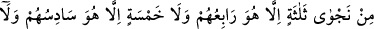
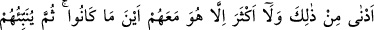
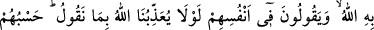
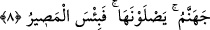

ALLAH’IN BİLDİĞİNİ
GÖRMÜYOR MUSUN?
7. Göklerde ve yerde olanları Allah’ın bildiğini görmüyor musun? Üç kişinin gizli
konuştuğu yerde dördüncüsü mutlaka O’dur. Beş kişinin gizli konuştuğu yerde
altıncısı mutlaka O’dur. Bunlardan az veya çok olsunlar ve nerede bulunurlarsa
bulunsunlar mutlaka O, onlarla beraberdir. Sonra kıyamet günü onlara yaptıklarını
haber verecektir. Doğrusu Allah, her şeyi bilendir.
8. Gizli konuşmaktan menedildikten sonra yine o yasaklananı yapmaya
kalkışarak günah, düşmanlık ve Peygamber’e karşı gelmek hususunda gizlice
konuşanları görmedin mi? Onlar sana geldikleri zaman seni, Allah’ın selamlamadığı
bir şekilde selamlıyorlar. Kendi içlerinden de: Bu söylediklerimiz yüzünden Allah’ın
bize azap etmesi gerekmez miydi? derler. Cehennem onlara yeter. Oraya
gireceklerdir. Ne kötü dönüş yeridir orası!
“Göklerde ve yerde olanları Allah’ın bildiğini görmüyor musun?” Âyet-i kerime’nin
bu bölümü, Allah Teâlâ’nın şâhid olmasının sonsuzluğuna insanların şâhidlik etmelerini
istemekte, onları buna şâhid göstermektedir. Âyetin başındaki Hemze ise Allah’ın
şâhidliğinin sonsuzluğunu ikrar ve isbat eden inkârî hemzedir. Çünkü inkâr manen
nefyidir, olumsuzu nefyetmek ise olumluyu ispat etmektir. Bu sebeple Cenab-ı Hakk’ın
şâhidliğinin sonsuz olduğu görüldüğünün isbatı olur. Buradaki hitap öncelikle
Rasûlullah (s.a.)’e veya hitâba elverişli herkesedir. Bu durumda âyetin mânâsı şöyle
olur: “Müşâhede derecesinde yakın ve kesinlik ifâde eden ilimle bilmez misin ki, Allah
Teâlâ yerde ve gökte bulunan varlıklardan her şeyi bilir. Bu varlıklar ister her ikisinde
bulunmak sûretiyle olsun isterse ikisinin bir bölümünde bulunsun farketmez.”